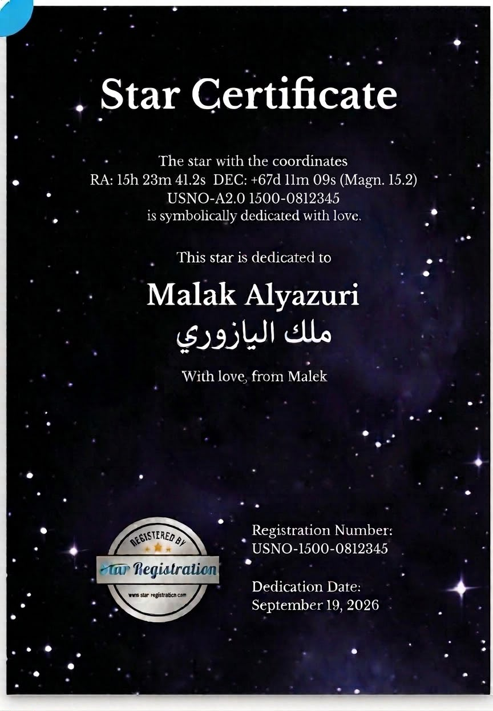

إلى ملك اليازوري
ملك،
إلك نجمة بالسما.
كل ما تطلّعي لفوق، تذكّري إنك
أجمل نجمة بحياتي.
نجمة ملك
With love, from Malek15h 23m 41.2s
+67° 11′ 09″
جارٍ حساب موقع نجمتك…
السماء فوقكِ الآن · الوسط فوق رأسكِ، والدائرة هي الأفق
علامة نجمتكِ مكبّرة لتوضيح مكانها.
اتبعي نجمتكِ.
وجّهي ظهر الآيفون نحو السماء، واتبعي السهم حتى تلتقي نجمتكِ بمنتصف الدائرة.
اضغطي لتسمحي بحساسات الحركة. امسكي الآيفون مسطّحًا للحظة، ثم ارفعيه نحو السماء.
نستخدم وسط عمّان كموقع تقريبي. موقعكِ الحالي يُحسب داخل جهازكِ.
إذا احتجتِ مساعدة
افتحي الرابط مباشرة في Safari. اسمحي بالحركة عند الطلب. ابتعدي عن المعادن والمغناطيس وحرّكي الجهاز بشكل رقم 8 لمعايرة البوصلة.
الهاتف يدلّكِ على اتجاه نجمتكِ. تابعي السهم وارفعي الهاتف بهدوء حتى تصل العلامة إلى منتصف الدائرة.
للمعايرة اليدوية: اجعلي الشاشة عمودية ووجّهي ظهر الهاتف نحو الشمال الحقيقي، ثم اضغطي الزر.
نجمة ملك
شغّلي التوجيه لتبدئياتبعي موقع نجمتكِ الآن.
حساب الموقع يتجدّد تلقائيًا
شهادتكِ، بكل الحب.

من مالك، بكل الحب، إلى ملك اليازوري.